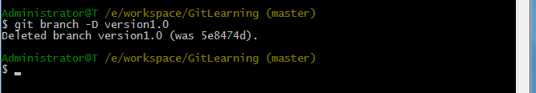

看到这儿Git的基础你应该都掌握了，下面我们开始研究版本控制工具Git的高级用法--分支
介绍分支
分支就是科幻电影里面的平行宇宙，当你正在电脑前努力学习Git的时候，另一个你正在另一个平行宇宙里努力学习SVN。
如果两个平行宇宙互不干扰，那对现在的你也没啥影响。不过，在某个时间点，两个平行宇宙合并了，结果，你既学会了Git又学会了SVN！

分支在实际开发中有什么用呢？只在主干线进行开发不是挺好的吗？没错，通常情况下，只在主干线上进行开发是完全没问题的，不过一旦涉及到出版本的情况，如果不建立分支的话，你就会非常的头疼。比如你们公司开发了一款不错的软件，最近刚刚完成，发布了1.0版本，领导不会让你闲着，马上又进入到1.1版本的开发之中。过了几个星期之后1.1版本已经完成了一半，但是这时用户反馈有几个Bug，需要修复后，并重新发布1.0，这个时候你就非常为难了，因为现在1.1版本已经开发了一半了，如果在现有代码的基础上修复这些Bug,那么更新的1.0版本将会有一半的1.1的功能！
如果你建立了分支就完全不会遇到上述问题，你只需要在发布1.0版本的时候建立一个分支，然后在主干线上继续开发1.1版本的功能。当1.0版本出现任何问题的时候，你就可以在分支上修改，然后发布新的1.0，并记得将修改后的代码合并到主干线上。这样的话不仅轻松的解决掉1.0的bug，而且保证了主干线上的代码也已经修复了这些Bug,当1.1版本发布的时候也不会有这些Bug了。这就是分支的重要性呀！
分支用法
分支的英文名是branch，想要查看当前的版本库中有哪些分支可以用：
可以看出当前项目中还没有创建任何一个分支，因此只有一个master分支存在，也就是前面所讲的主干线。接下来我们尝试创建一个分支，命令如下：
创建完以后再git branch -a 一下就看到了刚刚创建的分支，如上图。这时我们还会发现master分支前面有一个*号，这个星号代表的含义是目前我们的代码还是在master分支上，怎么切换分支呢？如下图：
看到Switched to branch 'versiong1.0'表示切换成功！
此时我们在看一下：
*号已经跑到version1.0前面了。
需要注意的是，在version1.0分支上的修改并提交的代码不会影响到master分支。同样的道理，在master分支上提交的代码也不会影响到verion1.0分支。要想version1.0合并到master的话怎么办呢？最好的办法就是用merge命令来完成合并操作，（合并某分支到当前分支：git merge
最后当我们不需要version1.0这个分支的时候，可以使用如下命令将这个分支删除掉：
解决冲突
人生不如意之事十之八九，合并分支往往也不是一帆风顺的，可能会出现冲突。
我们创建简单的文本文件为例，在H盘下创建文件夹GitTest作为文件仓库：
下面创建一个新的分支feature1，然后在文件test.txt输入内容：I love fish AND meat!，然后提交。
跳到master，然后在文件test.txt输入内容：i love you ，然后提交，然后我们合并分支就会出现如下的冲突：
此时我们可以查看test.txt的内容：
Git用<<<<<<<，=======，>>>>>>>标记出不同分支的内容，我们修改如下后保存：
然后再次提交：
用带参数的git log也可以看到分支的合并情况：
最后你可以决定删不删除分支。